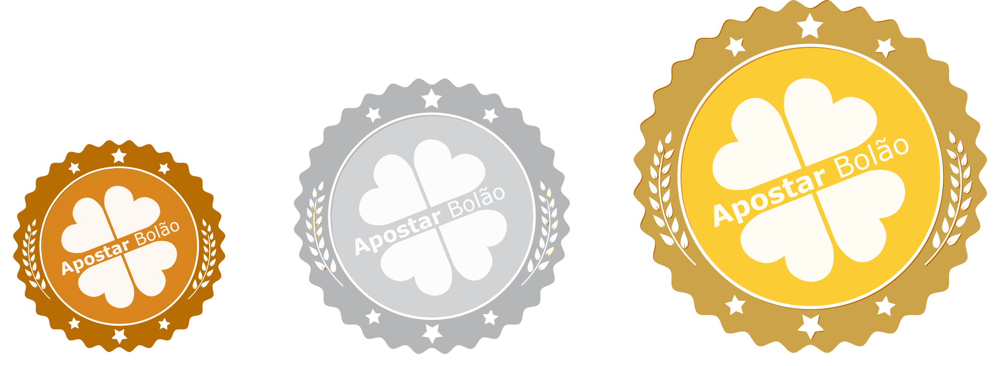
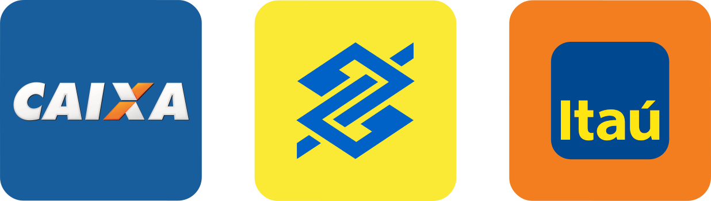

Contamos com 3 tipos de planos de assinatura, são eles:
Bronze, Prata e Ouro

Após escolher um dos planos, o apostador concorrerá com os jogos elaborados pelo sistema Apostar Bolão. Para cada loteria há diferentes combinações que se repetem ao longo do mês com as famosas "teimosinhas". A cada período mensal são feitas novas combinações e os jogos mudam. Cada plano se divide entre 10 até 100 participantes, permitindo que o apostador tenha direito a uma parcela dos valores premiados, sendo o prêmio dividido igualmente entre o grupo.
Obs:. O prêmio será dividido entre partes iguais por participantes daquele plano escolhido.
O pagamento do serviço será feito uma vez por mês, para que você siga apostando sem interrupções, os mesmos jogos durante um mês. Após o final do plano, será feita uma análise das premiações que sairam daquele plano contratado e o valor total do mesmo, será repartido entre partes iguais pelo Apostar Bolão.
Cadastre-se
1 - Para escolher um dos planos é preciso ter mais de 18 anos e fazer o seu cadastro no Apostar Bolão. Certifique-se de cadastrar seu e-mail correto, ele será seu login e é através dele que vamos enviar informações, comunicados e avisos de premiações.
Obs:. Caso seu e-mail possua algum dispositivo anti-spam, não se esqueça de liberar os e-mails do Apostar Bolão.
Escolha seu Plano
2 - Finalizado seu cadastro, basta escolher o plano desejado. Para cada plano existente, temos as opções de produtos, sendo possível assinar somente em apostar para a Mega-Sena, ou Quina, ou Lotofácil, ou Dia de sorte e assim sucessivamente.
Formas de Pagamento

3 - O Apostar Bolão disponibiliza de 3 tipos de formas de pagamentos, sendo por meio de Depósito ou Transferência Bancária nos seguintes Bancos.
Caixa Econômica Federal
Banco do Brasil
Banco Itaú
Em breve outras formas de pagamento para agilizar o processo de pagamento online.
Acompanhe sempre os resultados
4 - Para visualizar suas apostas, basta acessar a opção "Meus Planos" na seção “Minha Conta”, é necessário estar logado. Elas ficam disponíveis sempre, logo que os demais jogos serem todos registrados entre casas lotéricas credenciadas pela CEF.
Dúvidas
Em caso de premiação o Apostar Bolão credita automaticamente o usuário, que poderá a qualquer momento solicitar um resgate, bastando informar o banco, agência e conta corrente. Esta operação pode ser feita acessando o menu Resgatar Prêmios.
Obs: A Caixa Econômica Federal não possui qualquer vínculo ou responsabilidade sobre esta operação, que é uma iniciativa do
www.apostarbolao.com.br
E-mail
contato@apostarbolao.com.br